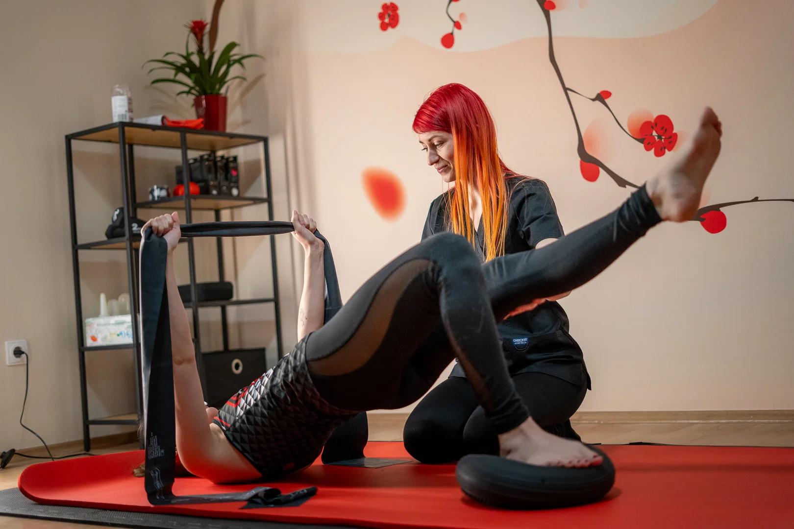
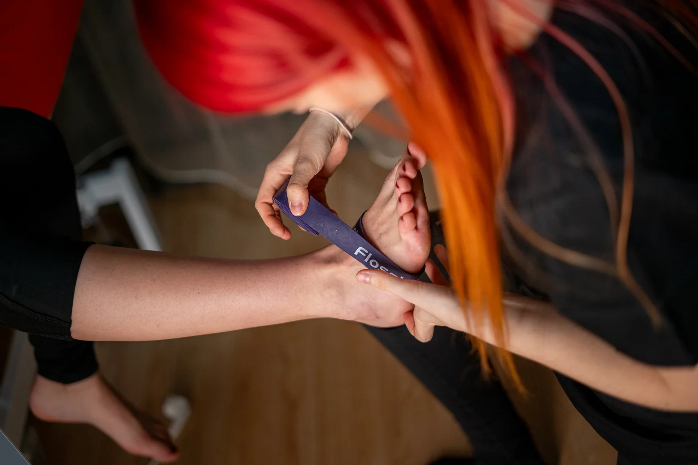

Gyógytorna

A gyógytorna, más néven fizioterápia vagy rehabilitáció, olyan
terápiás módszer, amely testmozgásokat, nyújtó gyakorlatokat, erősítő
gyakorlatokat és egyéb fizikai módszereket használ fel az egészség
helyreállításához, sérülések kezeléséhez vagy a mozgásfunkció
javításához. A gyógytorna széles körben alkalmazható a
sportbalesetektől a krónikus betegségekig és az ortopéd problémákig.
Mire jó?
-
Funkció helyreállítása: A gyógytorna segíthet visszaállítani és
javítani a mozgásfunkciót sérülések, betegségek vagy műtétek
után.
-
Fájdalomcsillapítás: Speciális gyakorlatok és technikák
segíthetnek enyhíteni a fájdalmat, különösen az ízületi vagy
izomfájdalmak esetén.
-
Erősítés és rugalmasság: A gyógytorna segíthet az izomerő
növelésében és a test rugalmasságának javításában.

Mikor ajánlott?
-
Sérülések utáni rehabilitáció: A gyógytorna hatékony módszer
lehet a sérülések utáni rehabilitációban, hogy visszanyerjük az
elvesztett mozgékonyságot és erőt.
-
Krónikus betegségek esetén: Bizonyos krónikus betegségek,
például artrózis vagy csontritkulás esetén a gyógytorna segíthet
a tünetek enyhítésében és a mobilitás javításában.
-
Megelőzés: A gyógytorna nemcsak a kezelés része lehet, hanem a
sérülések megelőzésére és az egészséges életmód fenntartására is
szolgálhat.
- Ülő életmód okozta panaszok enyhítésére!
Mikor nem ajánlott?
-
Akut sérülések esetén: Bizonyos akut sérülések esetén először
megfelelő orvosi kezelésre lehet szükség, mielőtt gyógytornát
végeznénk.
-
Bizonyos állapotokban: például súlyos szív- és érrendszeri
problémák vagy fertőzések esetén először orvossal kell
konzultálni a gyógytorna megfelelőségéről.